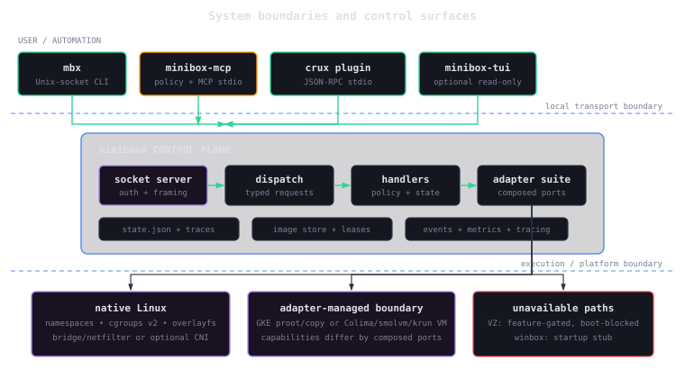

Container lifecycle
Pull, run, stop, remove, list, logs, exec, events, pause, resume, restart, and resource controls.
A small, readable container runtime with a daemon/CLI split, native Linux isolation, and swappable platform adapters.
$ mbx pull alpine Pulling alpine:latest... Image cached $ mbx run alpine -- echo "hello from minibox" hello from minibox $ mbx ps ID IMAGE STATE a3f7c2 alpine stopped
The native Linux path exposes the mechanics that larger runtimes hide behind layers of orchestration.
Fetch the OCI manifest and layers, verify digests, then reuse content-addressed cache entries.
Stack read-only layers beneath a thin writable overlay and validate every path crossing the extraction boundary.
Enter PID, mount, network, UTS, and IPC namespaces while cgroups v2 enforce resource limits.
Persist the execution manifest, pivot the root, close inherited descriptors, and launch with explicit-environment execve.
Native Linux is the complete reference path. VM and remote adapters deliberately expose their capability differences.
Pull, run, stop, remove, list, logs, exec, events, pause, resume, restart, and resource controls.
Peer credentials, request limits, policy admission, digest verification, path containment, and hardened child setup.
Native and GKE are production suites; Colima, smolvm, and krun provide experimental lifecycle paths.
Docker Hub and GHCR pulls, parallel layer downloads, cache management, plus adapter-dependent build, push, and commit.
Structured tracing, optional OTLP export, Prometheus metrics, lifecycle events, and a read-only terminal dashboard.
A policy-gated MCP server and Crux JSON-RPC plugin expose typed daemon operations to agent workflows.
mbx, MCP, Crux, and the read-only TUI converge on the same daemon protocol and composed adapter suite.

The workspace is version 0.33.0. Native Linux is production-ready; stabilization gates remain the promotion bar as features continue.
Read the stability evidenceCross-platform exec and logs, Windows composition, unprivileged isolation, networking hardening, and broader image workflows remain visible priorities.
Open the roadmap